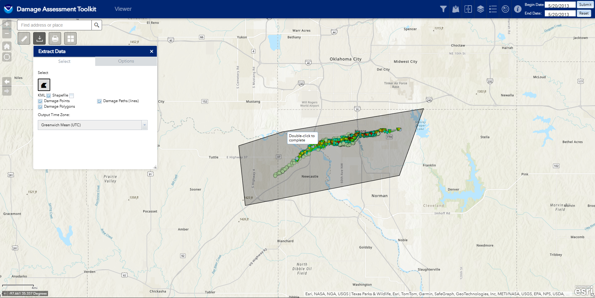
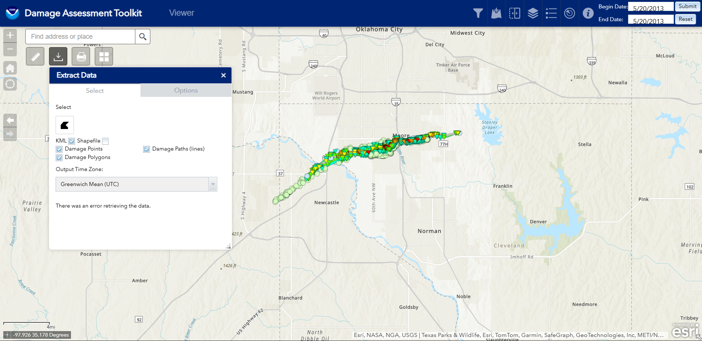

Table of Contents And Links
- What is The Damage Assessment Toolkit (DAT)?
- How to Use The DAT
- How to Download Files
- Known Problems
- Damage Assessment Toolkit Site
What is The Damage Assessment Toolkit (DAT)?
The Damage Assessment Toolkit (shortened to DAT) is a portal to view surveys done by each NWS office. This site allows us to view the surveys, along with Damage Indicators (shortened to DI's). We can see damage paths, usually just a center line of the damage path, or if the office decides, polygons representing the whole width, sometimes including different polygons representing different levels of damage, shown in the image beside,along with specific DI's.
 In the Image to the left is the survey of the may 20th, 2013 Moore OK EF-5, done by NWS Norman. Here we can see a good example of what I was explaining earlier when talking about the polygons. We can see different polygons representing the different levels of damage (turquiose representing EF-0 damage and the purple representing EF-5 damage), along with each specific DI. In this case, this survey was well done, and each house impacted by the tornado has its own specific DI. We can also see the centerline path of the tornado aswell, which is usually estimated, or simply derived from the path width (taking the width and dividing it by 2).
In the Image to the left is the survey of the may 20th, 2013 Moore OK EF-5, done by NWS Norman. Here we can see a good example of what I was explaining earlier when talking about the polygons. We can see different polygons representing the different levels of damage (turquiose representing EF-0 damage and the purple representing EF-5 damage), along with each specific DI. In this case, this survey was well done, and each house impacted by the tornado has its own specific DI. We can also see the centerline path of the tornado aswell, which is usually estimated, or simply derived from the path width (taking the width and dividing it by 2).
 Anyways, lets continue to talk about DI's! They're where most of the information comes from. In the photo to the left, You can click on each DI to get more information, and using one of the buttons at the top, expand the panel. Here I clicked on one of the first two EF-5 DI's. It opens up a panel, showing some information about the DI, such as when the tornado happened, the day it was surveyed, some information about how it was rated (the Damage Indicator used, and the description of the indicator, in this case showing the EF scale description), the EF scale rating (EF-5 in this case) and the estimated windspeeds needed to cause this level of destruction, the officed that surveyed the DI, any comments or notes that the surveyor left (usually a description of the damage, or in some cases with ef-4 DI's, reasons why it wasn't rated EF-5), and any photos that the surveyors took to allow us to see the damage they saw.
Anyways, lets continue to talk about DI's! They're where most of the information comes from. In the photo to the left, You can click on each DI to get more information, and using one of the buttons at the top, expand the panel. Here I clicked on one of the first two EF-5 DI's. It opens up a panel, showing some information about the DI, such as when the tornado happened, the day it was surveyed, some information about how it was rated (the Damage Indicator used, and the description of the indicator, in this case showing the EF scale description), the EF scale rating (EF-5 in this case) and the estimated windspeeds needed to cause this level of destruction, the officed that surveyed the DI, any comments or notes that the surveyor left (usually a description of the damage, or in some cases with ef-4 DI's, reasons why it wasn't rated EF-5), and any photos that the surveyors took to allow us to see the damage they saw.
How to Use The DAT
 When you first open up the DAT, it will probably look something like this, a map of the world with some funky lines in the states. These funky lines are just the boundaries where each office has juristiction over, which is helpful when a tornado goes across these boundaries (and when a survey goes from in-depth to like one damage path, happens more than you think!). At the top of the page, we can see some buttons. Starting on the right, we have the buttons for selecting the time period. This allows us to see data from between 2 different dates. Typically, I tend to view, at most, 1 year at a time, since there can be so much data to load that the browser either crashes, or your pc freezes if you select a large set of data. To the left of this, there are several different buttons, for learning about the page, showing radar data of the time, seeing legend and layer lists, adding data, and filters. On the left side of the page are a few tools, including a search box to look up towns, counties or cities, a download tool (we will get to that later), a measurement tool, and a print and gallery tools. All of these tools are pretty self-explainatory.
When you first open up the DAT, it will probably look something like this, a map of the world with some funky lines in the states. These funky lines are just the boundaries where each office has juristiction over, which is helpful when a tornado goes across these boundaries (and when a survey goes from in-depth to like one damage path, happens more than you think!). At the top of the page, we can see some buttons. Starting on the right, we have the buttons for selecting the time period. This allows us to see data from between 2 different dates. Typically, I tend to view, at most, 1 year at a time, since there can be so much data to load that the browser either crashes, or your pc freezes if you select a large set of data. To the left of this, there are several different buttons, for learning about the page, showing radar data of the time, seeing legend and layer lists, adding data, and filters. On the left side of the page are a few tools, including a search box to look up towns, counties or cities, a download tool (we will get to that later), a measurement tool, and a print and gallery tools. All of these tools are pretty self-explainatory.
How to Download Files
What Would I Even Download Files?
Its actually quite useful! I used it quite alot for my Google Earth project! It lets you download each DI, along with all the paths and polygons. Its also quite interesting to have to lay over satellite data.
What Exactly do I Download?
The DAT site currently allows you to download two types of files, KMZ files (on the site it incorrectly has them as KML files), which is for Google Earth, and ShapeFiles, which is used for GIS applications, which most people dont use, in this case, we will just talk about KMZ files and how to download them.
Downloading The Files

To download any files, on the left hand side of your screen, you should see the extract data menu. It will prompt you to click on points to create a polygon. It also allows you to filter out the data you want to only export DI's, or polygons (like in the moore 2013 ef-5, as shown to the left, has so much DI's that you cannot download all of them at once), among other things. Once you have selected all the things you want, and double-clicked after creating a polygon, it will start to retrieve the data. In my experience, it can take between 20 seconds to even a few minutes, depending on the size of the data. Once it finishs, a hyperlink will appear in the menu, where you can then download the data. There you have it!Known Problems

One of the problems I have come across when using the DAT involves the downloading tool. When on a public network, and you try to download something, in this case I'm trying to download the KMZ file for the Moore 2013 EF-5, you get this error. From What I can tell, through the inspect element and talking with some friends, is that when you click the download, you send a request, and that request sends some information along with it (most sites like this do that, quite common). What it basically "asks" for is the DI's and polygons, and it also tells the server about where the request came from (since it needs it to send the DI's and polygons back somewhere), with an address. From what I believe, when the DAT server sees an adress coming from a public place, it either gets caught on a bug, or it see's it comes from a public place, and then refuses to send the data (public connections are a weak point when it comes to secuirity). Knowing the way government sites are, its probably the former, but the later is also possible.So How do You Fix it?
One of the ways I found a way to avoid this problem is using a vpn when using public wifi connections. any vpn (that actually works) should work. I have been using Proton VPN, which is a free vpn (just be aware, some free vpn's can be sketchy, or sell your data, from what i can tell, Proton is decent), which is free and open source and I havent had an issue yet with them. It does have some limitations with its free plan, but you'd find that anywhere. Using this method, using a server thats in the states works well, as sometimes the DAT just doesnt like people trying to download KMZ files from outside of the United States (sucks as a Canadian). As of now, I have yet to figure out any other fixes for this problem.